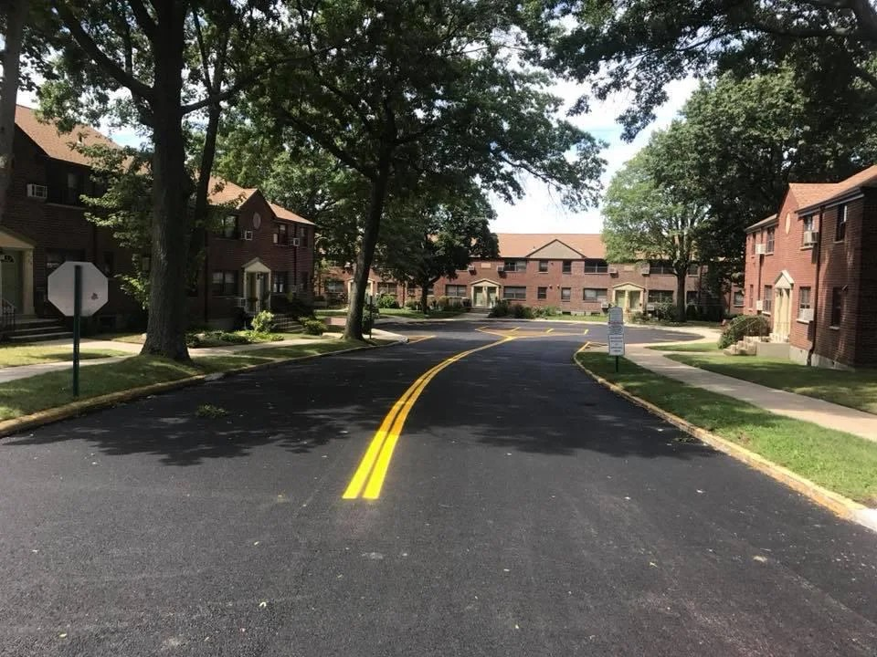
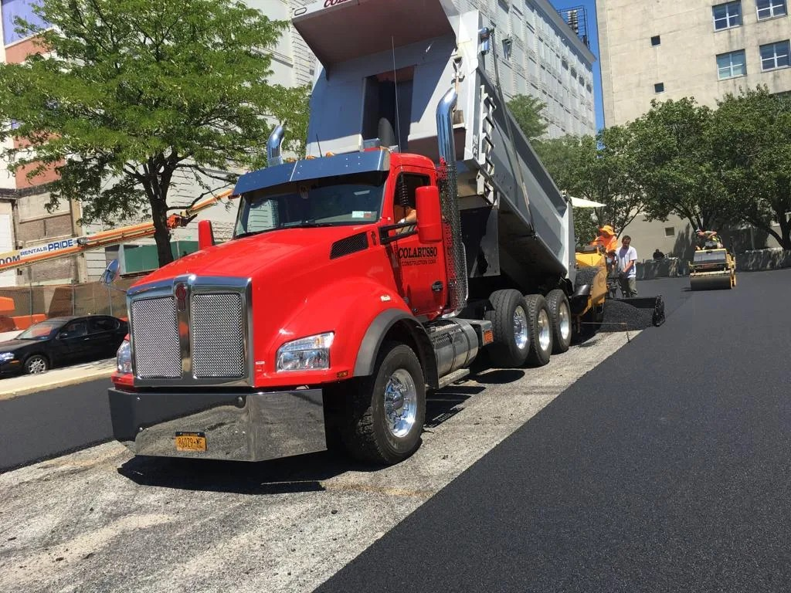
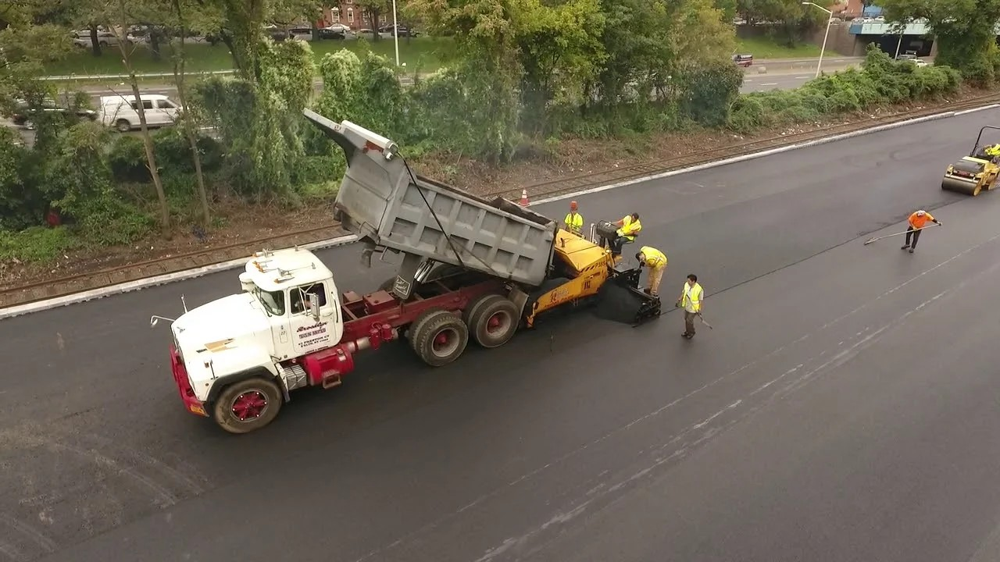

Serving the College Point community with excellence.
Long Island City occupies the westernmost edge of Queens, separated from Midtown Manhattan only by the East River, yet sharing the same borough infrastructure challenges that define commercial paving across Queens County. LIC's transformation over the past two decades — from a quiet industrial zone to a dense mixed-use corridor of high-rise residential buildings, creative office spaces, production studios, and retail — has placed new demands on its paved surfaces. Parking structures, private lot aprons, commercial driveway transitions, and loading zone surfaces throughout Long Island City now serve significantly higher daily traffic volumes than the original pavement designs anticipated. A qualified paving contractor serving Long Island City must be equipped for urban commercial-scale projects with tight site logistics, strict traffic management requirements, and zero tolerance for project delays that disrupt active businesses.
Greater Queens County encompasses some of New York City's most complex commercial paving environments. From the waterfront industrial corridors of College Point and Whitestone in the north to the dense commercial strips of Jamaica and Briarwood in the south, from the logistics hubs near JFK Airport in the southeast to the institutional campuses of Flushing and Forest Hills in the center, Queens presents paving contractors with an extraordinary range of project types, soil conditions, traffic loads, and site access challenges. Pavement infrastructure in Queens County serves schools, hospitals, airports, transit facilities, warehouses, retail centers, and municipal properties — each with distinct design requirements and performance expectations. Grey Ruso - Asphalt, Paving & Construction has built its 38-year career serving exactly this range of clients across the borough.
The geography of Queens shapes its paving challenges in ways that differ from Manhattan's grid or Brooklyn's residential neighborhoods. Long Island City's post-industrial parcels include large surface parking lots that predate modern stormwater management standards, with drainage systems that overflow into adjacent streets during intense rainfall events. Astoria's dense commercial avenues feature pavement surfaces subjected to constant bus and delivery traffic. Flushing's Main Street corridor carries some of the highest pedestrian and commercial traffic densities in the outer boroughs. Jackson Heights and Woodside have mixed-use strips where loading dock activity competes with light-rail transit infrastructure. Grey Ruso's paving contractor teams have worked in all of these contexts, adapting project execution methods to the specific demands of each neighborhood and client type.
Service access from College Point to Long Island City follows the Queens waterfront arteries — the Brooklyn-Queens Expressway approach, the Queens-Midtown Tunnel service routes, and the network of surface streets that connect LIC to the broader borough grid. Grey Ruso's equipment and crews mobilize efficiently from their College Point base to project sites throughout Queens County, including Long Island City, Astoria, Jackson Heights, Flushing, Jamaica, and beyond. That geographic agility — combined with 38 years of project history in the borough — makes Grey Ruso one of the most experienced paving contractors available to Queens commercial property owners.
Grey Ruso - Asphalt, Paving & Construction has served commercial and industrial clients throughout Queens County from its College Point, NY base since 1987. The company's family-owned structure means clients work directly with experienced principals who understand project specifics firsthand — not dispatched field crews managed remotely. With nearly four decades of project history across Long Island City, Flushing, Astoria, Jamaica, and the broader New York metropolitan area, Grey Ruso brings a depth of institutional knowledge that newer or larger competitors cannot match. Grey Ruso at 20-48 130th St, College Point, NY 11356, or call 718-358-1836 today.

Grey Ruso delivers a comprehensive range of commercial paving services to Long Island City and surrounding Queens neighborhoods. Asphalt paving and installation covers new lot construction from subgrade preparation through final surface course. Asphalt pavement repairs address potholes, alligator cracking, surface raveling, and failed drainage zones with correctly sized interventions — crack sealing for isolated surface cracks, infrared patching for small failures, and full-depth reclamation for structurally failed sections. Concrete work includes curbing, sidewalks, aprons, and ADA-compliant access improvements. Drainage systems installation corrects the stormwater management deficiencies common in LIC's older industrial properties. Parking lot paving services include lot design, marking layout, and complete surface replacement with minimal downtime planning. Paver installation adds visual distinction to entry plazas, pedestrian areas, and commercial frontages across Queens County. Asphalt resurfacing contractor
Large commercial paving projects in Long Island City and similar high-density Queens neighborhoods require careful pre-project planning. Site logistics — equipment staging areas, material delivery windows, traffic control plans, utility coordination — must be mapped before mobilization begins. Grey Ruso coordinates directly with property managers and tenants on occupancy phasing, ensuring that buildings remain accessible throughout construction. Night-work and off-peak scheduling is available for projects adjacent to active high-volume operations. Material sourcing from asphalt plants strategically located near the Queens waterfront minimizes haul time and maintains mix temperature on delivery, which directly affects compaction quality and finished surface performance. The company's established relationships with local suppliers and municipal agencies streamline permitting and logistics coordination for projects in Long Island City, Astoria, and the broader western Queens commercial zone.

Grey Ruso's Queens County service territory covers the full geographic span of the borough, from Long Island City and Astoria in the west to Jamaica and Rosedale in the east, and from College Point and Whitestone in the north to Howard Beach and Ozone Park near the southern waterfront. In the central Queens commercial belt — Flushing, Jackson Heights, Elmhurst, Forest Hills, and Rego Park — the company serves retail property owners, healthcare campuses, transit-adjacent commercial facilities, and mixed-use developments. Industrial paving in Jamaica and Springfield Gardens, municipal facility maintenance in multiple Queens neighborhoods, and school and hospital campus projects throughout the borough all fall within Grey Ruso's active service portfolio. Airport paving contractor This geographic breadth distinguishes Grey Ruso from contractors who operate within a narrower radius and lack experience with the diversity of project types found across Queens County. Learn how paving projects increase commercial property value in College Point.
Municipal and institutional clients — schools, hospitals, transit authorities, and government facilities — require paving contractors with the licensing, bonding, insurance capacity, and project management discipline to perform on public-sector timelines and documentation requirements. Grey Ruso has served institutional clients across the New York metropolitan area for nearly four decades, developing the administrative systems and field execution standards that these clients demand. Certified payroll documentation, safety compliance, change-order management, and as-built documentation are handled efficiently. The company's longevity — 38 years of continuous operation in Queens County — provides the financial stability and reference portfolio that institutional procurement processes require. College Point's location at the center of the Queens waterfront gives Grey Ruso efficient access to municipal facilities in every direction across the borough.
Requesting a commercial paving estimate from Grey Ruso is straightforward. Property owners and managers in Long Island City and throughout Queens County can call 718-358-1836 to schedule an on-site assessment, or visit the company at 20-48 130th St in College Point. The assessment visit covers existing pavement condition, drainage review, scope discussion, and project timeline framing. A written proposal is provided following the visit, with costs itemized by work type and a clear scope definition that eliminates ambiguity about what is and is not included. Grey Ruso's proposals are competitive because they are built on accurate quantity takeoffs and realistic labor estimates — not introductory pricing that changes during the project. Grey Ruso — Ready to work with a trusted paving contractor serving Long Island City and Queens County? Call Grey Ruso at 718-358-1836.
Grey Ruso - Asphalt, Paving & Construction serves customers throughout College Point and Queens County, including Long Island City, Astoria, Flushing, Whitestone, Jamaica, Jackson Heights, Elmhurst, Forest Hills, and Bayside. Whether your commercial property is a high-rise parking structure in Long Island City or an industrial yard in College Point's 11356 ZIP code, our paving contractor team brings the right capabilities to the project. Service extends to Nassau County, Long Island, Westchester, and the full five boroughs of New York City.
Yes — Grey Ruso regularly serves commercial and industrial clients in Long Island City and western Queens, mobilizing from the company's College Point base. Projects in LIC have included parking lot resurfacing, drainage corrections, concrete curbing, and ADA-compliant access improvements at commercial, residential, and mixed-use properties. The company's familiarity with LIC's dense urban site logistics, tight access conditions, and active-tenancy paving requirements makes it a practical and experienced choice for property owners in that neighborhood.
Grey Ruso's Queens County client portfolio includes commercial complexes, office buildings, schools, hospitals, warehouses, industrial facilities, municipal properties, and mixed-use developments. The company has worked for property managers, institutional owners, public agencies, and private developers throughout the borough. Project types range from small parking lot repairs to large-scale new construction and full-lot reconstruction, with the full scope of asphalt, concrete, drainage, and paver installation services available under a single contract.
Grey Ruso coordinates traffic control plans with property managers and, where required, with New York City DOT permitting for work affecting public right-of-way. Flaggers, temporary signage, and construction fencing are deployed to maintain safe pedestrian and vehicle movement during work. For projects in high-traffic Queens locations such as Long Island City or Flushing, phased paving schedules minimize the footprint of active work at any one time, keeping access functional throughout the project duration.
Yes — Grey Ruso provides both asphalt paving and concrete work in integrated commercial projects throughout Queens County. Concrete applications commonly paired with asphalt lots include curbing, entrance aprons, sidewalks, ADA ramps, dumpster pads, and loading dock approaches. Combining both trades under a single contractor simplifies coordination, eliminates interface disputes between subcontractors, and typically accelerates project completion compared to managing separate asphalt and concrete crews.
Grey Ruso extends commercial paving service beyond Queens to all five New York City boroughs, Long Island (Nassau and Suffolk counties), and Westchester County. Large commercial projects — industrial campuses, municipal facilities, institutional properties — in these areas are served from the College Point base. The company's project history includes work for schools, hospitals, and commercial complexes across the New York metropolitan area, giving Grey Ruso the logistical experience and crew capacity to serve regional clients efficiently.